池内 4 涨 9 跌，结构极端分化：红利/低估值站在 60 日高附近，题材端全线破位。 类二买在池内并非同时兑现——只有 5 只仍在结构内、5 只已破位，仓位应向「新高附近 + 修复中」7 只倾斜。
1. 强的更强、弱的更弱。站上 60 日高附近的 5 只（石化、平安、成渝、瀚蓝、马应龙）全是红利/低估值/中药，无一只是 9 月后的题材股； 破位的 5 只全是机器人、传媒、电源方向的 9–11 月高位股。
2. 入池收益与当下结构无关。入池以来 6 只正收益，但其中凯莱英（+13.1%）已破位、中文在线（-10.5%）早已转弱 —— 类二买是「买点信号」，不是「持有的理由」，信号失效就要按结构走。
3. 可动的只有 3 只。瀚蓝（新高 + 当日金叉）、石化（新高不放量）、成渝（完整多头排列）结构内最干净； 其余 10 只等条件：修复中 2 只看 MA60，破位 5 只只观察。
| # | 标的 | 所属行业 | 收盘 | 涨跌 | 成交额(亿) | 总市值(亿) | 距60日高 | 入池以来 | 结构 |
|---|---|---|---|---|---|---|---|---|---|
| 1 | 凯莱英 | 医疗服务 | 141.21 | -3.76% | 9.59 | 511 | -27.3% | +13.07% | 破位区 |
| 2 | 北特科技 | 汽车零部件 | 45.09 | -2.61% | 3.16 | 156 | -18.0% | -9.18% | 破位区 |
| 3 | 新雷能 | 其他电源设备 | 19.98 | -0.40% | 2.53 | 108 | -43.0% | -34.92% | 破位区 |
| 4 | 新凤鸣 | 化学纤维 | 17.11 | -1.44% | 1.25 | 287 | -19.9% | -18.64% | 修复中 |
| 5 | 桂冠电力 | 电力 | 9.23 | +3.48% | 1.55 | 728 | -11.9% | -8.34% | 修复中 |
| 6 | 四川成渝 | 公路铁路运输 | 7.40 | +0.27% | 0.81 | 226 | -0.9% | +15.81% | 新高附近 |
| 7 | 中国石化 | 石油加工贸易 | 5.97 | +1.36% | 12.67 | 7207 | +0.0% | +1.19% | 新高附近 |
| 8 | 平安银行 | 银行 | 12.20 | -0.41% | 16.61 | 2368 | -1.2% | +3.65% | 新高附近 |
| 9 | 中文在线 | 文化传媒 | 23.26 | -1.77% | 15.92 | 169 | -23.4% | -10.47% | 破位区 |
| 10 | 瀚蓝环境 | 环境治理 | 31.66 | +1.12% | 2.23 | 258 | -0.8% | +1.83% | 新高附近 |
| 11 | 拓斯达 | 自动化设备 | 25.42 | -3.93% | 7.63 | 121 | -39.4% | -23.82% | 破位区 |
| 12 | 马应龙 | 中药 | 25.97 | -0.88% | 1.97 | 112 | -1.8% | +4.34% | 新高附近 |
| 13 | 春风动力 | 汽车服务及其他 | 312.29 | -0.85% | 3.41 | 479 | -5.3% | -0.85% | 中继向上 |
成交额、总市值与老师原表逐项核对一致（中国石化 7206.7 vs 7207 亿、平安银行 2367.5 vs 2368 亿）。「入池以来」= 入池日收盘 → 11/18 收盘（前复权）。
四只红利/低估值 + 一只中药，是池内唯一站在 60 日高附近的组合；共同点是 MA5>MA10>MA20 多头排列，不同点是量能——瀚蓝 1.33 放量、石化 1.01 持平、平安 0.80 缩量、成渝 0.82 缩量，突破质量按此排序。
收盘 5.97 恰好 创 60 日新高（收盘=最高=60 日高），量比 1.01 与 5 日均量持平，属创新高不放量的健康形态。入池（11/02）以来仅 +1.19%，说明突破集中在最近 3 个交易日，属新启动而非追高。
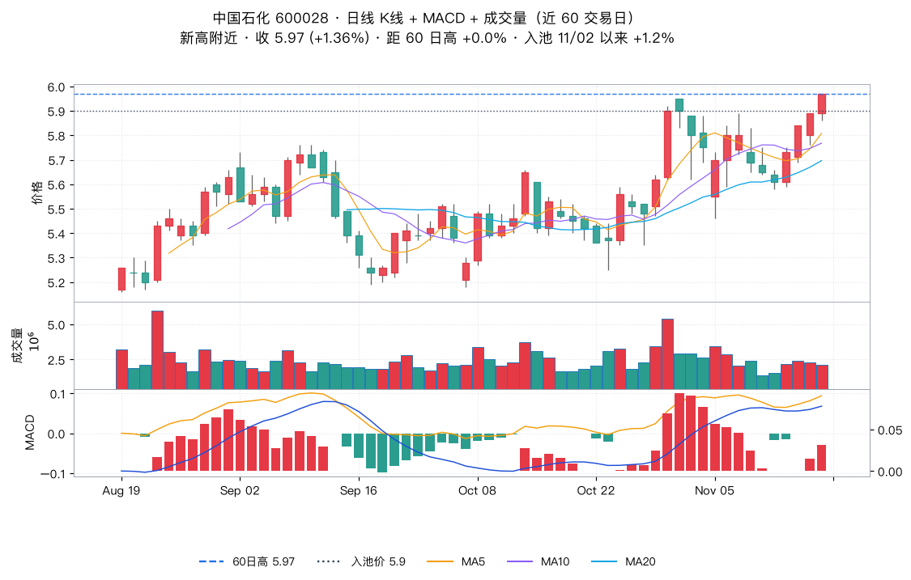
中国石化 · 收 5.97（+1.36%）· MA20 5.70 · 量比 1.01 · 60 日高 5.97（11-18）
贴着 9/03 的 60 日高 12.35 横盘，距高 -1.2%，量比 0.80 缩量 —— 蓄势但没量。放量站上 12.35 才算突破，否则只是高位震荡。
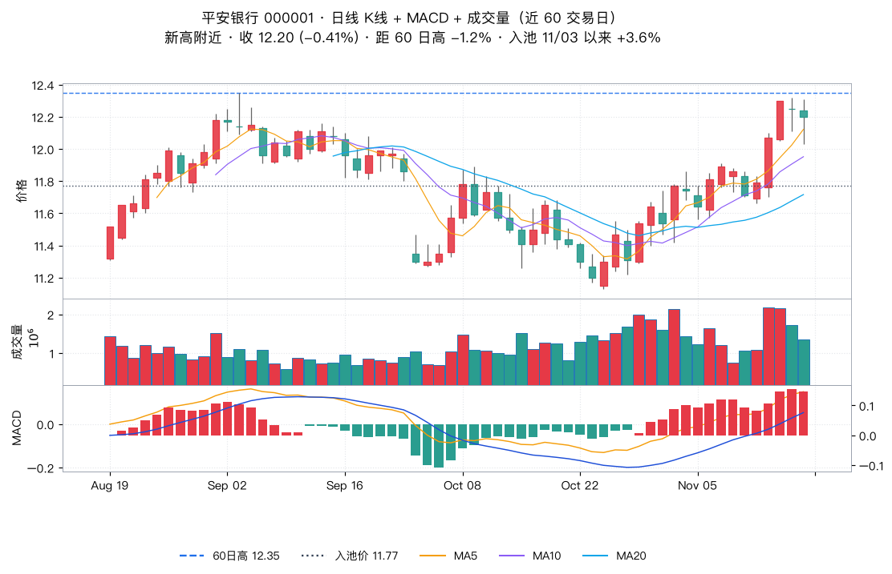
平安银行 · 收 12.20（-0.41%）· MA20 11.72 · 量比 0.80 · 60 日高 12.35（09-03）
入池（10/09）以来 +15.8%，池内浮盈第一；MA5>MA10>MA20>MA60 完整多头排列（7.30/7.17/6.83/6.30）。涨幅温和但趋势最顺，回踩 MA5 7.30 不破即继续持有。
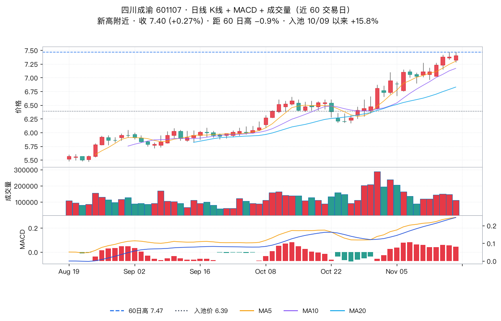
四川成渝 · 收 7.40（+0.27%）· MA20 6.83 · 量比 0.82 · 60 日高 7.47（11-17）
池内结构最干净：盘中 31.90 创 60 日新高，收 31.66，量比 1.33 温和放量，MACD 当日金叉。入池（11/09）以来 +1.8%，几乎还在成本区。
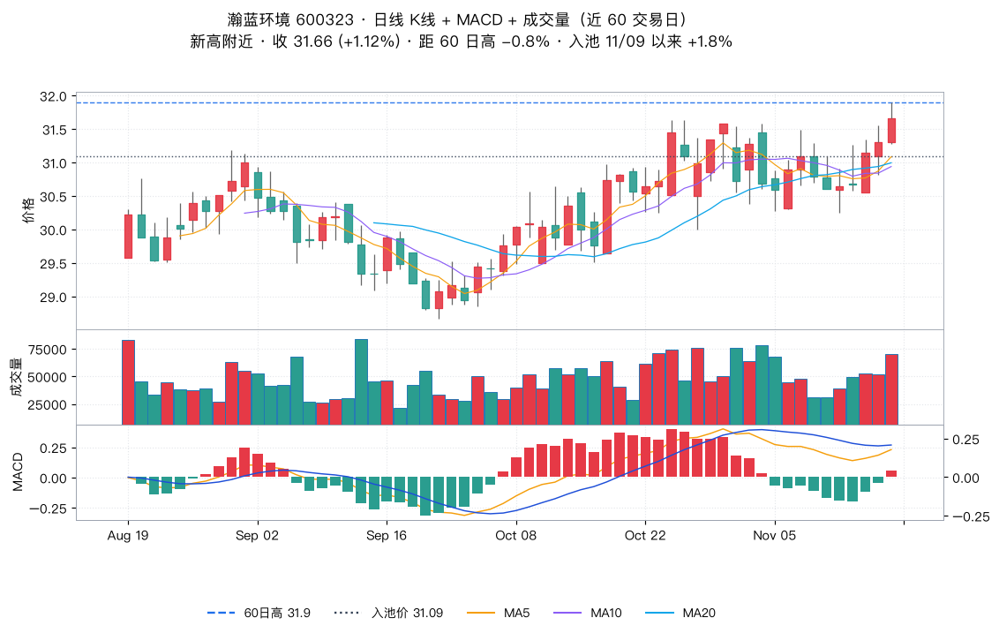
瀚蓝环境 · 收 31.66（+1.12%）· MA20 31.00 · 量比 1.33 · 60 日高 31.90（11-18）
盘中冲到 26.44（=60 日高）后回落收 -0.88%，新高未站稳。但 MA5>10>20>60 全多头排列完好（25.33/25.00/24.65/23.60），MACD 11/17 金叉；缩量回踩 24.65–25.00 不破则等二次冲高。
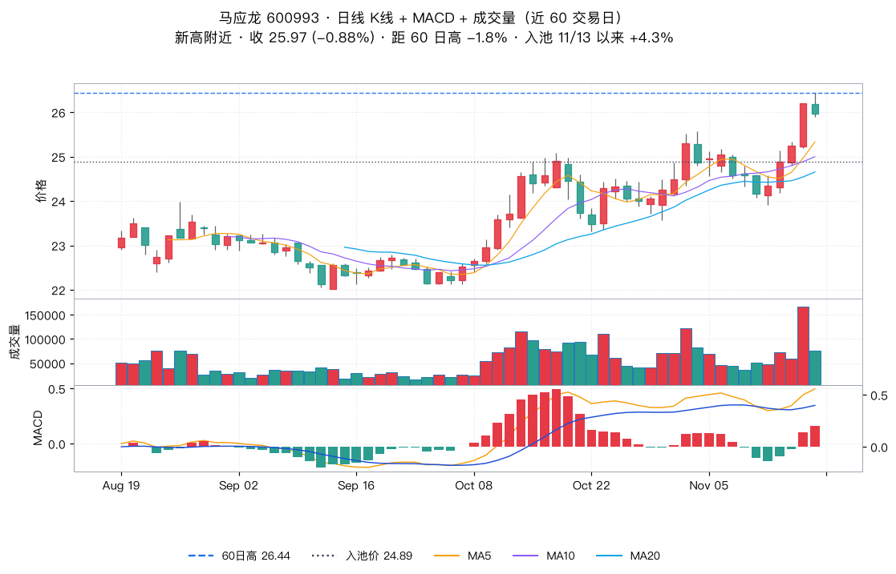
马应龙 · 收 25.97（-0.88%）· MA20 24.65 · 量比 0.90 · 60 日高 26.44（11-18）
唯一维持中期多头且未破位的成长股。
入池（11/17）次日 -0.85%，价格在 MA20（303.04）上方、60 日高 329.60（8/20）下方 -5.3%。20 日高 325 未过前属高位平台震荡，突破 325 才是右侧加仓信号。
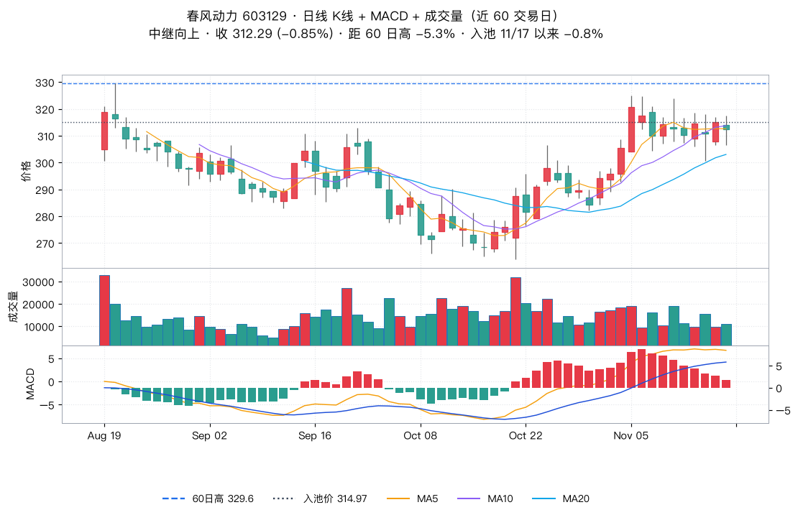
春风动力 · 收 312.29（-0.85%）· MA20 303.04 · 量比 0.96 · 60 日高 329.60（08-20）
两只都已收复短期均线群、仍在 MA60 之下：桂冠靠放量、新凤鸣靠缩量整理。MA60 是这两只的中期开关。
当日池内最强 +3.48%，量比 2.09 放量突破 MA5/10/20 三线粘连区（8.94/8.96/8.99），MACD 11/11 金叉延续。唯一门槛是 MA60 9.57 —— 收复即完成均线全多头。
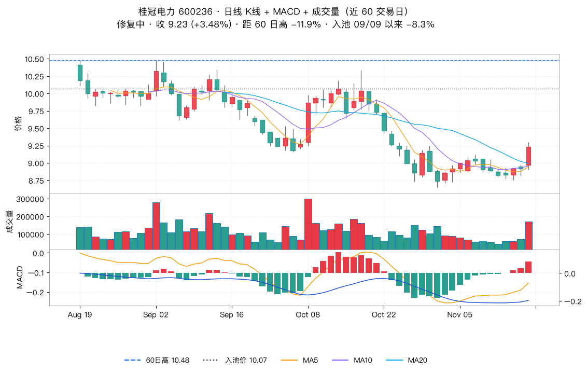
桂冠电力 · 收 9.23（+3.48%）· MA20 8.99 · 量比 2.09 · 60 日高 10.48（08-19）
夹在 MA20（16.93）与 MA60（17.59）之间缩量整理（量比 0.80），距 60 日高 -19.9%。17.59 是分水岭：站上则中期结构修复，有效跌破 16.93 回到弱势。
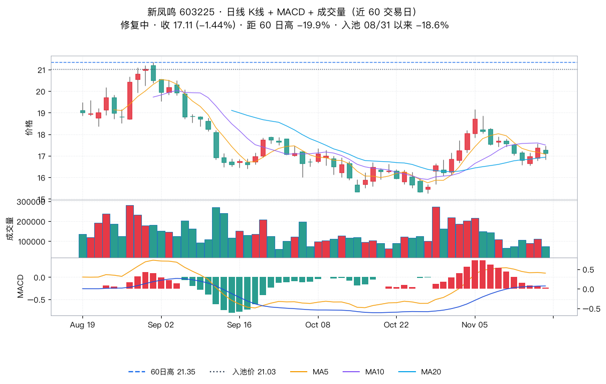
新凤鸣 · 收 17.11（-1.44%）· MA20 16.93 · 量比 0.80 · 60 日高 21.35（09-01）
无一例外是 9–11 月的高位股在杀估值/杀题材：机器人（北特、拓斯达）、传媒（中文在线）、电源（新雷能）、CXO（凯莱英）。缩量下跌（0.65–1.04）说明抛压未释放完，只观察不参与。
入池以来仍 +13.1%，是破位股里唯一大幅浮盈的。但 11/05 MACD 金叉后 8 个交易日就跌回 MA20（144.31）下方，60 日高 194.32 距今 -27.3%，MA60 162.46 高悬 —— 反弹没转成反转，按类二买口径属结构失效，不补仓。
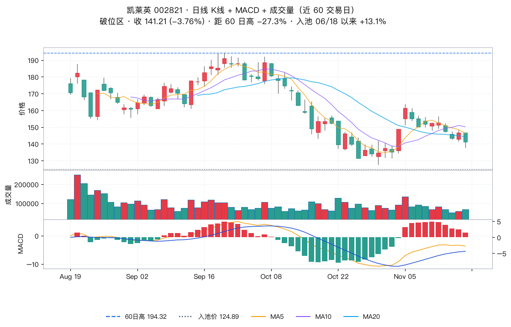
凯莱英 · 收 141.21（-3.76%）· MA20 144.31 · 量比 1.04 · 60 日高 194.32（09-21）
11/11 见 60 日高 55.00 后 5 个交易日跌 -18.0%，MACD 已转空头，量比 0.76 缩量下跌说明无承接。机器人题材退潮期，等 40.00（60 日低）区域是否出日线底分型。
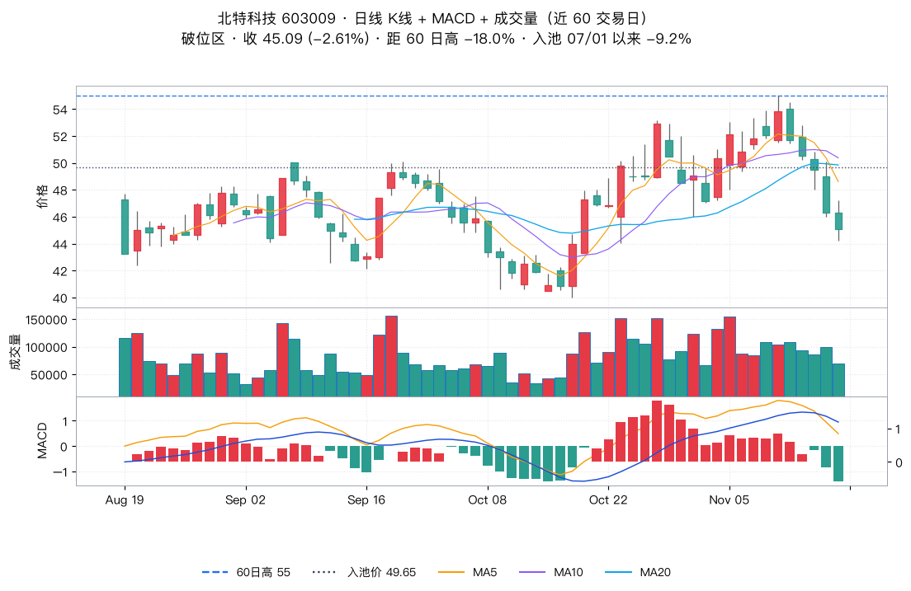
北特科技 · 收 45.09（-2.61%）· MA20 49.84 · 量比 0.76 · 60 日高 55.00（11-11）
池内最弱：入池（8/26）以来 -34.9%，距 60 日高 35.08 有 -43.0%，距 60 日低 19.03 只剩 5.0%，MA60 27.54 高悬。不破 19.03 仍算箱体下沿，破则彻底失效。
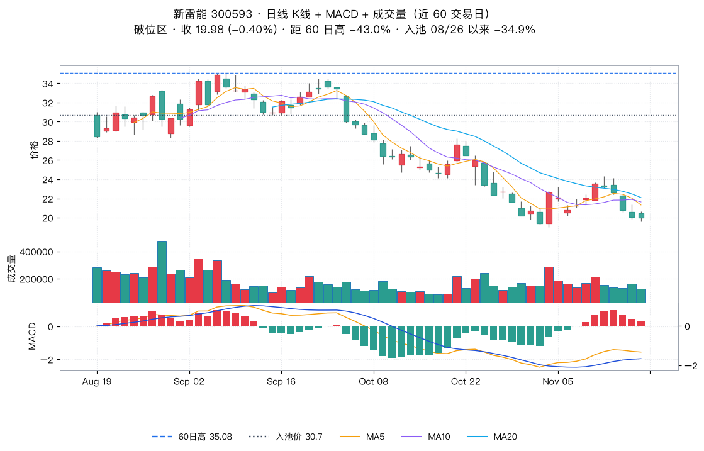
新雷能 · 收 19.98（-0.40%）· MA20 22.09 · 量比 0.89 · 60 日高 35.08（09-08）
11/11 冲高 30.38（=当日最高）后 A 型回落，6 个交易日 -23.4%，跌破 MA20 25.43 与 MA60 24.75。量比 0.65 缩量下跌，短线反抽先看能否收回 24.75。
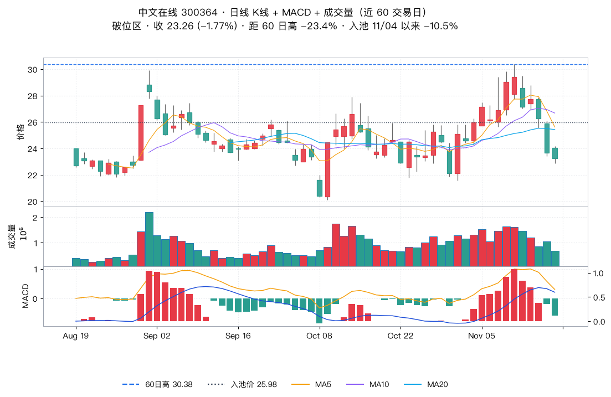
中文在线 · 收 23.26（-1.77%）· MA20 25.43 · 量比 0.65 · 60 日高 30.38（11-11）
当日池内最弱 -3.93%，MACD 死叉，距 60 日高 41.94 有 -39.4%，距 60 日低 24.95 只剩 1.9%。自动化设备方向退潮，24.95 破位即从池内剔除。
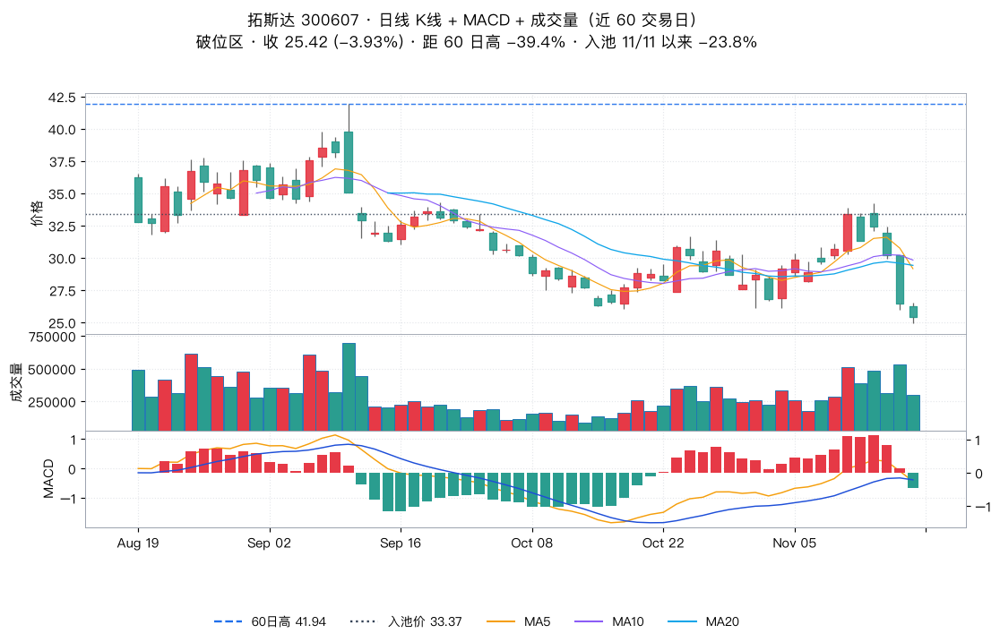
拓斯达 · 收 25.42（-3.93%）· MA20 29.42 · 量比 0.73 · 60 日高 41.94（09-10）
· 数据：Tushare 日线前复权，基准 = 2026-11-18 收盘；MA/量比/MACD 均由该序列计算，量比 = 当日量 ÷ 含当日 5 日均量。
· 「类二买共振」为老师原文口径（至少两个周期同时出现类二买结构）；本页只做日线级核验，未复算分钟级结构。
· 日期列 = 入池日；结构分档按「距 60 日高 + MA20/MA60 + MACD」机械判定，不含主观加减分。
数据源：Tushare pro.daily / daily_basic · 图为日线 K 线（红涨绿跌）+ 成交量 + MACD，均线 MA5/10/20。 仅作方法与结构记录，不构成投资建议。生成于 2026-11-18。